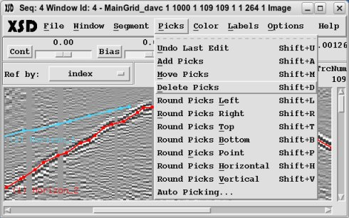
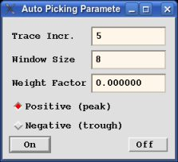

Use the "Picks" menu to select the "Edit Mode" which controls
editing picks within existing segments.
- Undo Last Edit:

This option will remove the last (and only the
last) edit made. The "Edit Mode" will remain unchanged.
- Add Picks:
This option sets up to add picks to existing
pick segments. Press the left mouse button to select the neatest
segment, then press the left mouse button again to select the
nearest pick within that segment from which to add additional picks
within the 2D segment plane. Continue pressing the left mouse button
adding picks. Press the right mouse button to terminate adding picks
to that segment and select another segment or change the Mode.
- Move Picks:
This option sets up to moving picks within
existing pick segments. Press the left mouse button to select the
nearest segment, then press the left mouse button again to select
the nearest pick and drag it to any desired position within the 2D segment
plane. Press the right mouse button to terminate moving picks on that
segment and select another segment or change the Mode.
- Delete Picks:
This option sets up to delete picks within
existing pick segments. Press the left mouse button to select the
segment, then press the left mouse button again to delete the nearest
pick within that segment. Continue pressing the left mouse button
to continue deleting other picks in the selected segment. Press the
right mouse button to terminate deleting picks in that
segment and select another segment or change the Mode.
- Round Picks Left:
This option sets up to move picks to the
left edge of the 2D segment plane. Press the left mouse button to
move the nearest pick to the left edge. Press the right mouse button
to reset and then the left mouse button again to move another pick.
Repeat the steps until the Mode is changed again.
- Round Picks Right:
This option sets up to move picks to the
right edge of the 2D segment plane. Press the left mouse button to
move the nearest pick to the right edge. Press the right mouse button
to reset and then the left mouse button again to move another pick.
Repeat the steps until the Mode is changed again.
- Round Picks Top:
This option sets up to move picks to the
top edge of the 2D segment plane. Press the left mouse button to
move the nearest pick to the top edge. Press the right mouse button
to reset and then the left mouse button again to move another pick.
Repeat the steps until the Mode is changed again.
- Round Picks Bottom:
This option sets up to move picks to the
bottom edge of the 2D segment plane. Press the left mouse button to
move the nearest pick to the bottom edge. Press the right mouse button
to reset and then the left mouse button again to move another pick.
Repeat the steps until the Mode is changed again.
- Round Picks Point:
This option sets up to move picks to a
designated point on the 2D segment plane. Press the left mouse button
to define the designated point. Press the left mouse button again
to select the nearest segment to modify. Press the left mouse button
again repeatedly to move the nearest picks in that segment to the designated
point. Press the right mouse button to terminate modifying that
segment and then the left mouse button again to repeat the process
until the Mode is changed.
- Round Picks Horizontal:
This option sets up to move picks to
a horizontal line on the 2D segment plane. Press the left mouse button
to define the designated horizontal line. Press the left mouse button
again to select the nearest segment to modify. Repeatedly press the
left mouse button to move the nearest pick in that segment to the
designated line. Press the right mouse button to terminate modifying
that segment and then the left mouse button again to repeat the process
until the Mode is changed.
- Round Picks Vertical:
This option sets up to move picks to
a vertical line on the 2D segment plane. Press the left mouse button
to define the designated vertical line. Press the left mouse button
again to select the nearest segment to modify. Repeatedly press the
left mouse button to move the nearest pick in that segment to the
designated line. Press the right mouse button to terminate modifying
that segment and then the left mouse button again to repeat the process
until the Mode is changed.
- Auto Picking:

This option sets up the auto picking parameters. The "Trace Incr"
parameter determine the horizontal increment at which to auto pick. The
"Window Size" parameter defines a window tolerance within which
the auto picking can search. The "Weight Factor" is a multiplier
to the distance from the picks used for auto-picking. Pick the
"Positive (peak)" or "Negative (trough)" to determine
auto-picking the peaks or troughs. The "On" button will turn
the auto-picking on the the "Off" button will turn auto-picking
off.